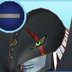

- 세대
- 궁극체
- 종족
 데이터
데이터- 속성
 물
물- 소비 메모리
- 18
- 장비 슬롯
- 3
스테이터스 (Lv.99)
HP197050위/98
SP20720위/98
ATK13883위/98
INT23220위/98
DEF18840위/98
SPD17383위/98
막대 길이는 등록된 디지몬 중 최고값 대비 비율이에요. 순위는 스테이터스가 등록된 디지몬끼리 비교해요.
필살기 1
얼티메이트 스트림 물 SP 20
적 1체마법위력 130
디지몬 속성과 같음
적 1체에 물속성 위력 130의 마법공격.
SS(서포트스킬)
이상한 비늘
받는 스테이터스 하락 효과를 무효화한다.
계승기 (레벨업 습득) 5
이 디지몬이 레벨업으로 배우는 스킬이에요. 배운 스킬은 진화·퇴화해도 계속 쓸 수 있어요.
| 습득 Lv | 스킬 | 속성 | SP |
|---|---|---|---|
| 20 | 하이드로 워터 III 적 1체에 물속성 위력 95의 마법공격. 명중률 95%. | 9 | |
| 35 | 오션 웨이브 II 적 전체에 물속성 위력 35의 마법공격. 명중률 95%. | 7 | |
| 50 | 어택 브레이크 필드 적 전체의 공격력을 10% 내린다. | 20 | |
| 65 | 헤븐즈 선더 III 적 1체에 전기속성 위력 95의 마법공격. 명중률 95%. | 9 | |
| 80 | 오션 웨이브 III 적 전체에 물속성 위력 65의 마법공격. 명중률 95%. | 10 |
이 디지몬이 강한 상대
상대 종족(세로)과 속성(가로)별로 이 디지몬의 공격 필살기 중 가장 높은 배율이에요. 칸에 마우스를 올리면 계산 근거가 보여요.
×3 이상×2 이상보통×1 미만
| 상대 ↓ / → | |||||||||
|---|---|---|---|---|---|---|---|---|---|
| 백신 | ×3.00 | ×2.00 | ×2.00 | ×2.00 | ×2.00 | ×2.00 | ×2.00 | ×2.00 | ×2.00 |
| 데이터 | ×1.50 | ×1.00 | ×1.00 | ×1.00 | ×1.00 | ×1.00 | ×1.00 | ×1.00 | ×1.00 |
| 바이러스 | ×0.75 | ×0.50 | ×0.50 | ×0.50 | ×0.50 | ×0.50 | ×0.50 | ×0.50 | ×0.50 |
| 프리 | ×1.50 | ×1.00 | ×1.00 | ×1.00 | ×1.00 | ×1.00 | ×1.00 | ×1.00 | ×1.00 |
등록된 디지몬 중 ×2 이상으로 공격할 수 있는 상대 97마리
궁극체 같은 세대 29 · 다른 세대 상대는 도감에서 볼 수 있어요.
샤인그레이몬BM×3.00워그레이몬×3.00페닉스몬×3.00갓드라몬×2.00넵튠몬×2.00듀란다몬×2.00레이브몬×2.00레이브몬BM×2.00마린엔젤몬×2.00마스테몬×2.00반쵸레오몬×2.00발두르몬×2.00샤인그레이몬×2.00세라피몬×2.00세인트가르고몬×2.00슬레이어드라몬×2.00슬레이프몬×2.00알파몬×2.00알파몬NX×2.00알포스브이드라몬×2.00오류우몬×2.00오메가몬NX×2.00오파니몬×2.00저스티몬×2.00켈비몬(선)×2.00크레니엄몬×2.00하이안드로몬×2.00헤라클레스캅테리몬×2.00홀리드라몬×2.00
진화 전 디지몬 (퇴화 가능) 3
진화 가능 디지몬 1

아포카리몬
- 레벨 99 이상
- 재능이 120 필요
진화 트리 · 메탈시드라몬까지 오는 길 + 다음 진화
왼쪽부터 진화 순서예요. 메탈시드라몬 오른쪽(점선 칸)은 바로 다음 진화 1단계예요. 그 뒤가 궁금하면 그 디지몬을 눌러 따라가 보세요. 선은 출발하는 디지몬의 색을 따라가요. 디지몬을 한 번 누르면 거기서 메탈시드라몬까지 가는 경로만 남고, 한 번 더 누르면 그 디지몬 페이지로 이동해요. 회색 칸은 아직 정보가 없는 디지몬이에요.
🧭 도감에서 메탈시드라몬 진화 루트 찾기